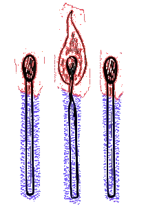

BANDAS Y ARTISTAS
|
|
NOSOTROS
La historia
En 2017 Niebla Páramo y Desasociado formaron T I R como primera plataforma para difundir sus proyectos musicales: Sombras y Sadkó fueron las primeras bandas producidas por el sello, y las que abrieron el camino para patrocinar más proyectos luego.
Tres incendios temporales ha participado en la organización directa o inderecta de diversos eventos en la escena Underground bogotana desde entonces, con el ánimo de apoyar las bandas locales y las marcas de diseño independientes de la ciudad.
La misión
III Incendios como plataforma creativa multidimensional